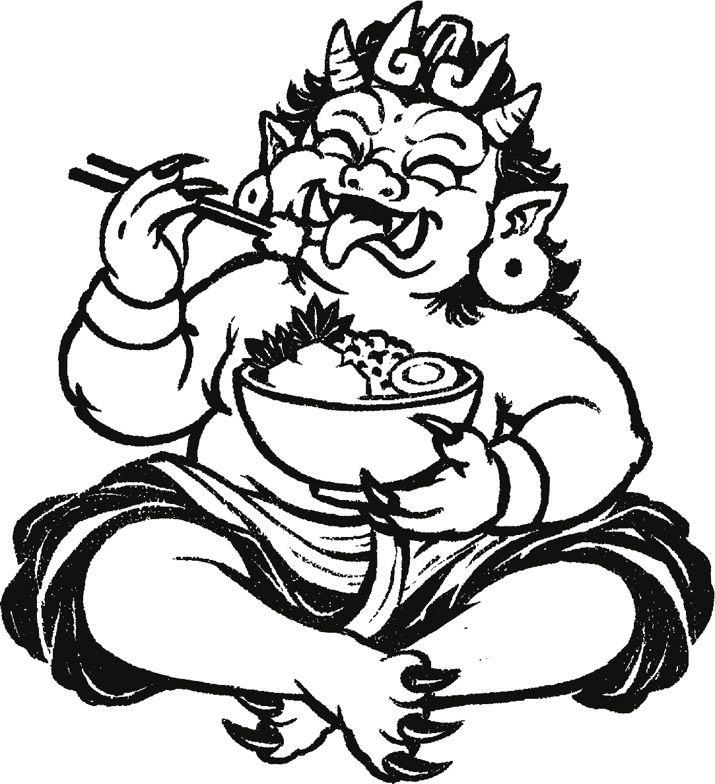
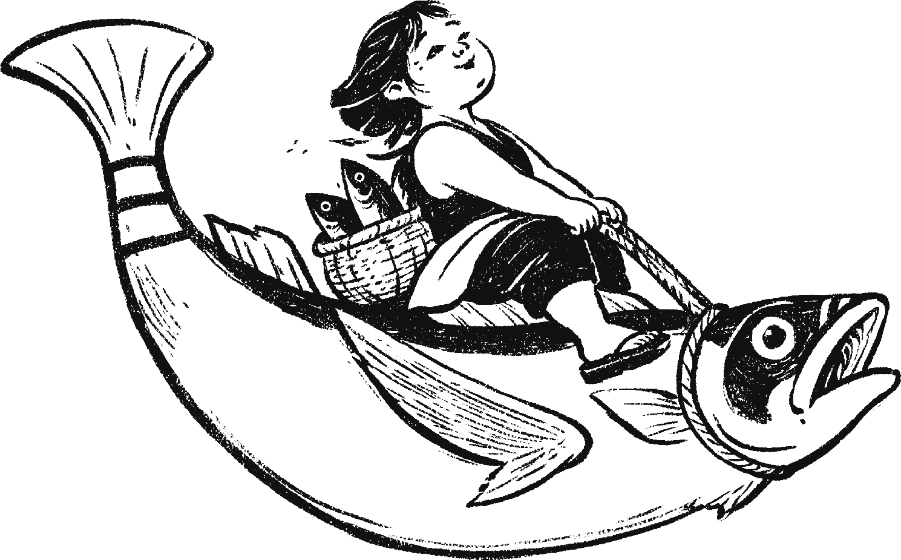
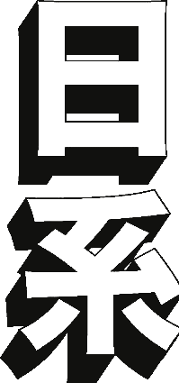

SAOKO · Spoon Food Hall · Geneva
Five flows.
One
A new look is on the menu.
Help us choose the next look for our stand.
01 / The new brand world
Two cultures.
One appetite.
SAOKO’s new visual world brings together the humour of Otafuku, a Japanese folk figure, and the imagery of the Peruvian Mochica fisherman.
Characterful illustrations, a free-spirited wordmark and a palette built on contrast. Two worlds, meeting over a bowl.
“A bowl is half the world.”


One visual language
Bold marks.
Rhythm.
Character.

The meeting of two worlds.02 / From brand to counter
Same DNA.
Five expressions.
The new logo, characters and colours find their place on the stand. Each direction balances the counter front, door, sign and hanging food panels in its own way.
you’re up!YOUR FLOW
OUR NEXT LOOK
03 / The next move is yours
Your turn.
Your flow.
We brought five looks.
You bring the final say.
The design with the most votes
is the one we’ll bring to life.
Pick the stand you’d love to walk up to. One favourite, one vote. Lock it in and see where the other flows stand.
Let’s pick a winnerA taste of the future public vote. This private beta tests the experience; votes accumulate on this device.
Thanks, team.